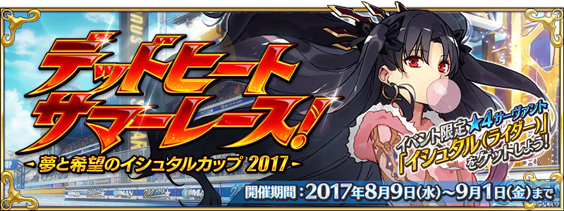
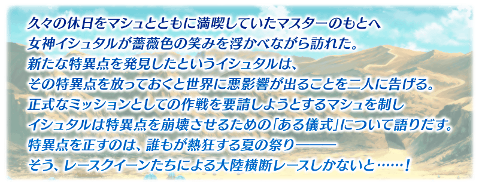
◆活動舉辦期間◆
2017年8月9日(三) 17:0019:30～8月30日(三) 11:599月1日(五) 11:59
※舉辦期間延長。
※(8/25修正)
◆活動概要◆
舉辦期間限定活動「Dead Heat・夏日競賽！ ～夢與希望的伊絲塔盃2017～」！
本活動中，Servant們將組成隊伍，參加伊絲塔舉辦的競賽競爭名次。
從參加競賽的6組隊伍聲援想聲援的隊伍，引導隊伍到終點吧！
本活動為二部構成。
通過第一部主線關卡的話「★4(SR)伊絲塔(Rider)」期間限定加入。
第二部預定自8月16日(三)開始。
要參加第二部條件為通過第一部的主線關卡。
第二部是新地圖，新的活動道具登場！
通過第二部主線關卡的話「★4(SR)伊絲塔(Rider) 」會正式加入。
將第一部、第二部一起通過，將「★4(SR)伊絲塔(Rider)」的正式加入做為目標吧！
◆活動参加條件◆
只限通過「特異點F 炎上汙染都市 冬木」的Master才能参加
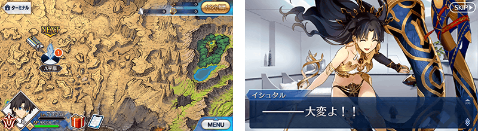
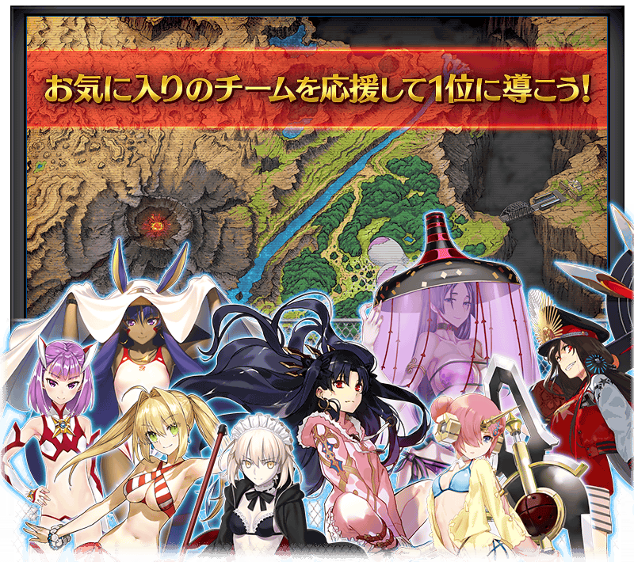
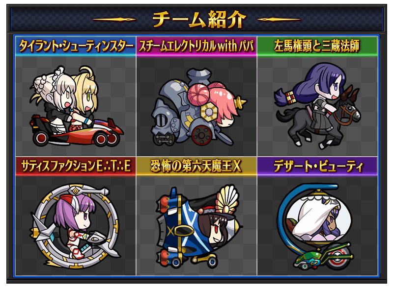
本活動隨著主線關卡的進行，會發生6隊競爭名次的「競賽聲援戰(レース応援戦)」。
通過任意想聲援隊伍的聲援戰關卡的話，會獲得「聲援點數(応援ポイント)」，讓該隊伍的競賽進行度上昇。
反覆喜愛的隊伍關卡提高競賽的進行度，使其比其他隊伍更快抵達終點吧！
各隊伍的競賽進行度會根據全部Master的點數合計値來進行。
與其他Master同心協力聲援同樣隊伍，提高競賽的進行度吧！
全部的隊伍抵達終點，競賽聲援戰結束的話，可獲得高排獲獎隊伍報酬。
「競賽聲援戰」結束的話會結束現在参加中的圈數，競賽會移動到下個圈數。
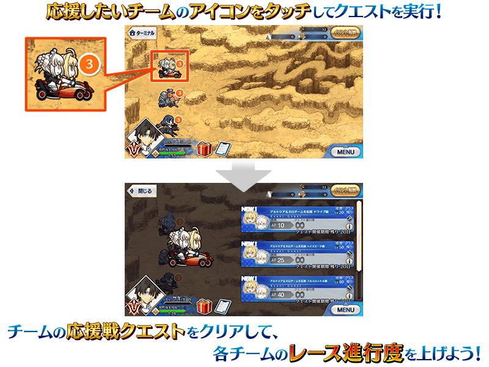
◆參加者全員得到高排獲獎隊伍報酬！◆
全部的隊伍到達終點的話，會顯示排名，競賽會移動到下個圈數。這時參加者全員皆可得到高排獲獎隊伍報酬。
各隊伍的高排獲獎隊伍報酬在參加各圈數的「競賽聲援戰」後，可自管理室(ターミナル)畫面右上的「活動報酬」確認。
※「高排獲獎隊伍報酬」在「競賽聲援戰」結束後的活動舉辦期間內，通過該圈數的主線關卡的話即可入手。
※「高排獲獎隊伍報酬」領取後會送至禮物箱。
◆獲取聲援點數得到QP！◆
聲援點數可在競賽舉辦中(全部隊伍抵達終點前)通過各隊伍的聲援戰關卡來獲得。
聲援點數獲得的話，在圈數結束後領取「高排獲獎隊伍報酬」時，可獲得「於該圈數獲得的聲援點數的合計對應量的QP」做為「聲援獎勵」。
跟聲援哪個隊伍、哪個隊伍得獎沒有關係。
通過更高難易度的關卡的情況和在關卡開始時使用推進道具的話，在關卡通過後給予聲援點數會增加。
聲援點數在参加各圈數的「競賽聲援戰」後，可自管理室(ターミナル)畫面右上的「活動報酬」確認。
※競賽聲援戰中，各隊伍通過的競賽地圖上的進行路線因隊伍有所差異。各隊伍勝負難分的情況，在競賽地圖與畫面上方會顯示高排3隊的名次來觀看差異。
請注意關於名次，在畫面上方顯示的會是名次離終點比較近的隊伍。
◆關於主線關卡的進行◆
競賽中領先的隊伍到達一定進行度的話，在地圖內會出現新的地點。
通過選擇出現的地點時所顯示的關卡的話，會進行主線關卡。
※就算圈數結束，未進行主線關卡的情況也無法進入下個圈數。另外，請注意進入下個圈數將無法回到前1個的圈數。
※請注意根據参加活動的時間點，會有「競賽聲援戰」結束的情況。在該情況不會影響主線關卡的進行，但無法執行聲援戰關卡。
※通過第一部的主線關卡的話，在全體地圖會復活全部的圈數，可反覆執行聲援戰關卡。
| 圈數名 | 競賽聲援戰舉辦期間 |
|---|---|
| 圈數1 A平原 |
8月9日(三) |
| 圈數2 ？？？ |
圈數1結束後 |
| 圈數3 ？？？ |
圈數2結束後 |
| 圈數4 ？？？ |
圈數3結束後 |
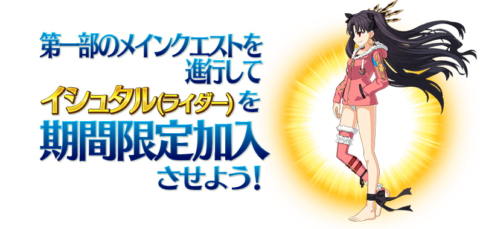
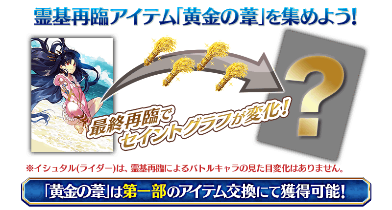
◆超值攻略方法・其1◆
可在活動道具交換和關卡報酬等獲得的推進道具「Quick油」「Arts硝基」「Buster汽油」在各隊伍的聲援戰關卡使用的話，會得到在戰鬥有利的效果。
推進道具，在關卡開始前，可任意選擇1種類使用。
※關卡中的推進道具效果對我方全體＜含候補＞都有作用，直到戰鬥結束都會持續。
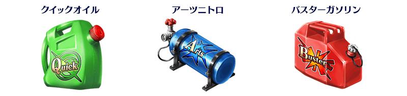
■使用推進道具讓獲得聲援點數提升！
另外使用推進道具通過聲援戰的話，可獲得比平常更多(2倍)的聲援點數。
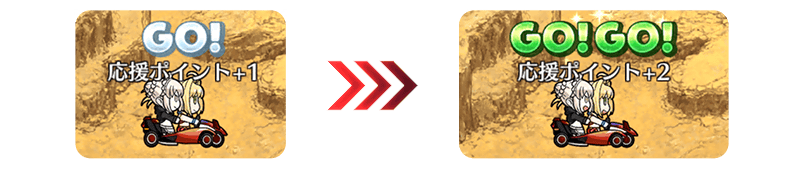
■配合相性更加提升！
各隊伍與推進道具有相性的話，相性良好可獲得更多(3倍)的聲援點數。
◆關於推進道具與各隊伍的相性◆
| 推進道具 | 隊伍名 |
|---|---|
| Quick油 | スチームエレクトリカルwithパパ |
| 恐怖の第六天魔王Ｘ | |
| Arts硝基 | サティスファクションＥ∴Ｔ∴Ｅ |
| デザート・ビューティ | |
| Buster汽油 | タイラント･シューティンスター |
| 左馬権頭と三蔵法師 |
◆超值攻略方法・其2◆
賦予對象的Servant活動道具「廢棄零件」「鈦合金板」「鎂製輪胎」的獲得數提升加成！
關於在期間限定活動「Dead Heat・夏日競賽！ ～夢與希望的伊絲塔盃2017～」與「Death Jail・夏日逃脫 ～罪與絶望的梅芙大監獄2017～」新登場的以下Servant會比其他對象Servant更多活動道具的獲得數。
※(８/15追記)
【對象Servant】
| 職階 | 稀有度 | 名稱 |
|---|---|---|
| Rider | ★★★★★ | 阿爾托莉亞・潘德拉剛〔Alter〕 |
| Caster | ★★★★★ | 尼祿・克勞狄烏斯 |
| Saber | ★★★★ | 弗蘭肯斯坦 |
| Archer | ★★★★ | 海倫娜・布拉瓦茨基 |
| Lancer | ★★★★ | 源頼光 |
| Rider | ★★★★ | 伊絲塔 |
| Assassin | ★★★★ | 尼托克里絲 |
| Berserker | ★★★★ | 織田信長 |
※(８/15追記)
【其他對象Servant】
| 職階 | 稀有度 | 名稱 |
|---|---|---|
| Archer | ★★★★★ | 阿爾托莉亞・潘德拉剛 |
| Archer | ★★★★★ | 俄里翁 |
| Archer | ★★★★★ | 新宿的Archer |
| Archer | ★★★★★ | 尼古拉・特斯拉 |
| Lancer | ★★★★★ | 玉藻前 |
| Assassin | ★★★★★ | 謎之女主角X |
| Caster | ★★★★★ | 玄奘三藏 |
| Caster | ★★★★★ | 不夜城的Caster |
| Archer | ★★★★ | 阿塔蘭塔 |
| Archer | ★★★★ | 安妮・伯妮＆瑪莉・瑞德 |
| Lancer | ★★★★ | 清姬 |
| Rider | ★★★★ | 莫德雷德 |
| Assassin | ★★★★ | 斯卡哈 |
| Caster | ★★★★ | 湯瑪斯・愛迪生 |
| Caster | ★★★★ | 瑪莉・安東尼 |
| Berserker | ★★★★ | 黃金國的Berserker |
| Ruler | ★★★★ | 瑪爾大 |
| Rider | ★★★ | 布狄卡 |
| Caster | ★★★ | 查爾斯・巴貝奇 |
※請注意一部與二部做為對象的Servant會有一部份差異。
◆超值攻略方法・其3◆
裝備可在活動道具交換的活動限定概念禮裝「★5(SSR)シーサイド・ラグジュアリー」的話，「廢棄零件」、「鈦合金板」、「鎂製輪胎」的掉落獲得數會提升。
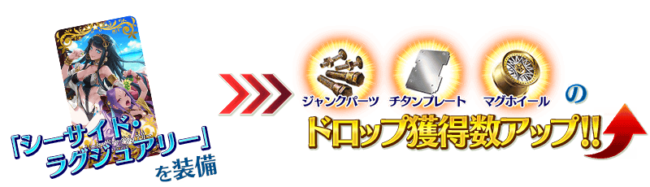
◆超值攻略方法・其4◆
裝備期間限定概念禮裝的話，活動道具「廢棄零件」「鈦合金板」「鎂製輪胎」各自的獲得數會提升。
※期間限定概念禮裝在第二部開始時也會追加第二部專用的活動道具掉落獲得數增加效果。
※請注意在各關卡的道具掉落率並非100%。
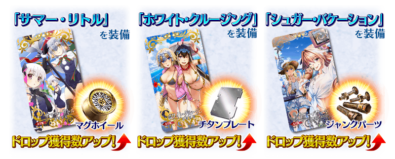
◆超值攻略方法・其5◆
可在第二部的「Death Jail・夏日逃脫 ～罪與絶望的梅芙大監獄2017～Pick Up召喚(每日交替)」入手的期間限定概念禮裝，也會有第一部的活動道具獲得數提升的效果。
裝備的話，活動道具「廢棄零件」「鈦合金板」「鎂製輪胎」各自的獲得數會提升。
※請注意在各關卡的道具掉落率並非100％。
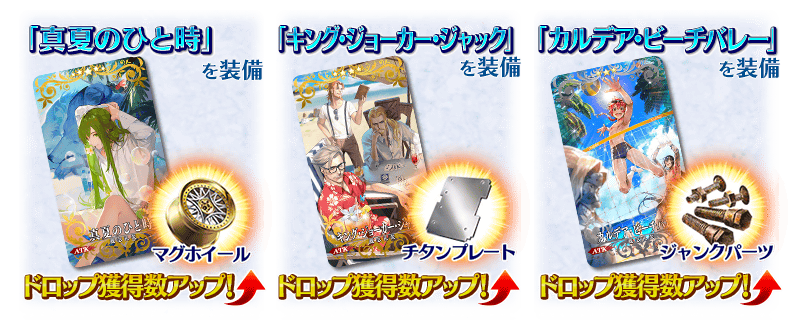
※(８/15追記)
| 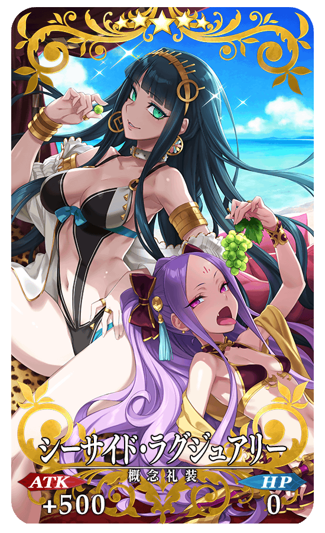 |
◆活動限定概念禮裝◆ |
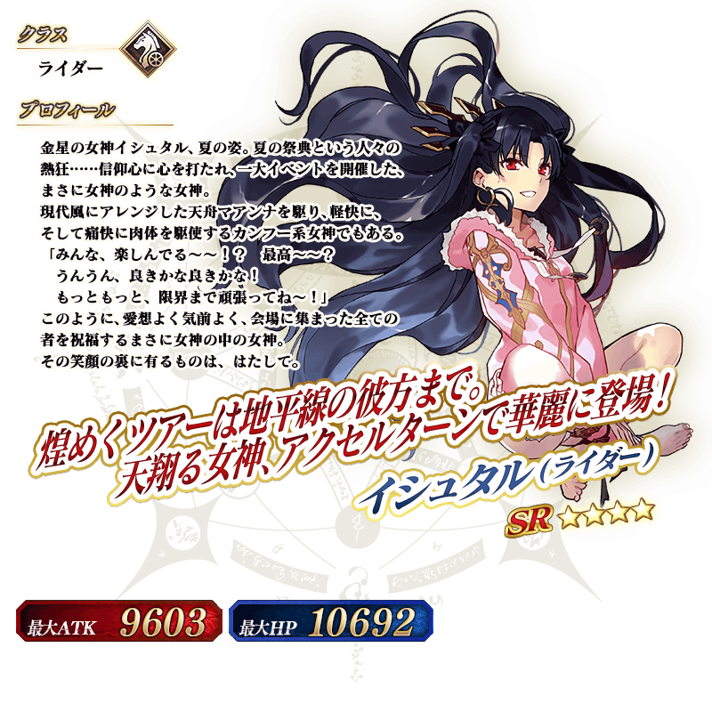
※伊絲塔(Rider)在第一部通過後期間限定加入，第二部通過後正式加入。
靈基再臨需要活動限定的専用靈基再臨道具「黄金の葦」。
寶具等級提升的詳情會在第二部相關的公告記載。
◆交換方法◆
交換期間:2017年8月9日(三) 17:0019:30～9月6日(三) 11:59
※交換期間結束後｢廢棄零件｣｢鈦合金板｣｢鎂製輪胎｣會消失。
自達文西工房內的「活動道具交換」，可用活動道具來交換以下的道具。
◆可用鎂製輪胎交換的道具◆
| 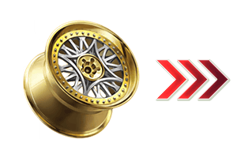 |
【活動限定概念禮裝】 【活動限定靈基再臨素材】 【技能強化素材、靈基再臨素材】 【靈基再臨素材】 【其他道具】 |
◆可用鈦合金板交換的道具◆
| 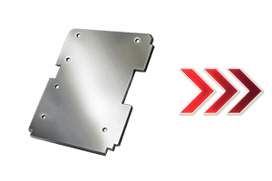 |
【活動限定概念禮裝】 【活動限定靈基再臨素材】 【技能強化素材、靈基再臨素材】 【靈基再臨素材】 【其他道具】 |
◆可用廢棄零件交換的道具具◆
| 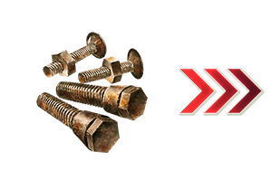 |
【活動限定概念禮裝】 【活動限定靈基再臨素材】 【技能強化素材、靈基再臨素材】 【其他道具】 |
◆可用Quick油・Arts硝基・Buster汽油交換的道具◆
※在活動舉辦期間結束後才能交換。
| 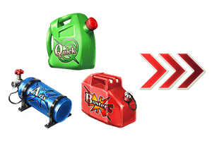 |
【其他道具】 |
以通過「終局特異點」及「Dead Heat・夏日競賽！ ～夢與希望的伊絲塔盃2017～」主線關卡的Master為對象開放高難易度關卡「挑戰關卡」。
通過挑戰關卡時，可獲得豪華報酬。
挑戰關卡就算在通過後也不會消失，能無數次挑戦，可以變更Servant和概念禮裝的組合後再次挑戰。
※關卡通過報酬、戰利品、MasterEXP、魔術禮裝EXP、絆點數只限在初次通過時獲得。
◆挑戰關卡参加條件◆
只限通過「終局特異點」及「Dead Heat・夏日競賽！ ～夢與希望的伊絲塔盃2017～」全部主線關卡的Master才能参加
◆挑戰關卡初次通過報酬◆
伝承結晶
在Fate/Grand Order官方網站內首頁及Gallery，公開期間限定活動「Dead Heat・夏日競賽！ ～夢與希望的伊絲塔盃2017～」的電視廣告。敬請確認。
以期間限定在達文西工房的「魔力稜鏡交換」追加下述的道具。
|
◆交換期間◆ ◆追加道具◆ |
 |
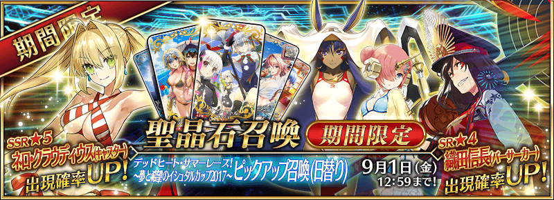
◆「Dead Heat・夏日競賽！ ～夢與希望的伊絲塔盃2017～Pick Up召喚(每日交替)」期間◆
期間:2017年8月9日(三) 17:0019:30～8月30日(三) 11:599月1日(五) 11:59
※舉辦期間延長。
※(8/25修正)
以期間限定舉辦「Dead Heat・夏日競賽！ ～夢與希望的伊絲塔盃2017～Pick Up召喚(每日交替)」！
身穿適合夏日服裝的Servant「★5(SSR)尼祿・克勞狄烏斯(Caster)」「★4(SR) 弗蘭肯斯坦(Saber)」「★4(SR)尼托克里絲(Assassin)」「★4(SR)織田信長(Berserker)」以期間限定登場！
「★5(SSR)尼祿・克勞狄烏斯(Caster)」常駐Pick Up！
另外「★4(SR)弗蘭肯斯坦(Saber)」「★4(SR)尼托克里絲(Assassin)」「★4(SR)織田信長(Berserker)」以每日交替Pick Up！
詳情請在聖晶石召喚畫面左下的召喚詳細確認。
※尼祿・克勞狄烏斯(Caster)、弗蘭肯斯坦(Saber)、尼托克里絲(Assassin)、織田信長(Berserker)在Pick Up召喚期間結束後，不會追加到故事召喚。
裝備期間限定概念禮裝「★5(SSR)サマー・リトル」「★4(SR)ホワイト・クルージング」「★3(R)シュガー・バケーション」的話活動道具的掉落獲得數會提升。
※「★3(R)シュガー・バケーション」在Pick Up期間中，也能在友情點數召喚獲得。
※可在「Dead Heat・夏日競賽！ ～夢與希望的伊絲塔盃2017～Pick Up召喚(每日交替)」獲得的期間限定概念禮裝預定在第二部開始後，賦予對應第二部的活動道具的效果。
詳情會在第二部相關的公告記載。
Pick Up期間中，期間限定Servant、期間限定概念禮裝的出現機率提升！
10次召喚中確定1張★4(SR)以上和確定1位★3(R)以上的Servant！
※確定★4(SR)以上包含Servant和概念禮裝。
※所謂「出現機率提升」意指比同稀有度的Servant及概念禮裝出現機率更高的設定。
| 每日交替Pick Up期間 | 每日交替Pick Up內容 |
|---|---|
| 8月9日(三) 8月16日(三) 22:59 |
尼祿・克勞狄烏斯(Caster)、弗蘭肯斯坦(Saber)、尼托克里絲(Assassin)、織田信長(Berserker) |
| 8月16日(三) 23:00～ 8月18日(五) 22:59 |
尼祿・克勞狄烏斯(Caster)、弗蘭肯斯坦(Saber) |
| 8月18日(五) 23:00～ 8月20日(日) 22:59 |
尼祿・克勞狄烏斯(Caster)、尼托克里絲(Assassin) |
| 8月20日(日) 23:00～ 8月22日(二) 22:59 |
尼祿・克勞狄烏斯(Caster)、織田信長(Berserker) |
| 8月22日(二) 23:00～ 9月1日(五) 11:59 |
尼祿・克勞狄烏斯(Caster)、弗蘭肯斯坦(Saber)、尼托克里絲(Assassin)、織田信長(Berserker) |
※(8/25修正)
※請注意會以每日交替變更Pick Up的Servant。
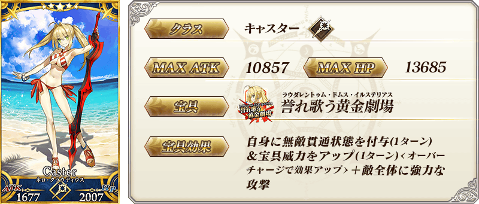
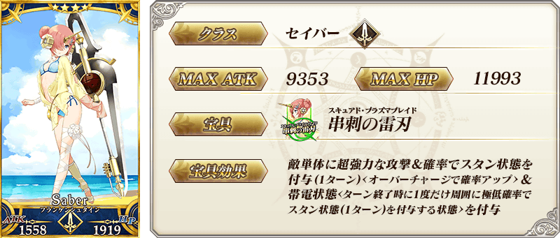
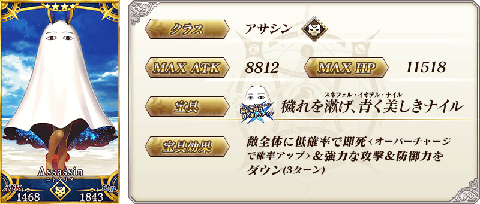
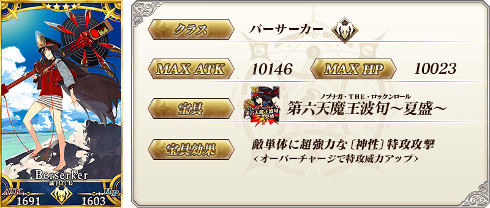
| 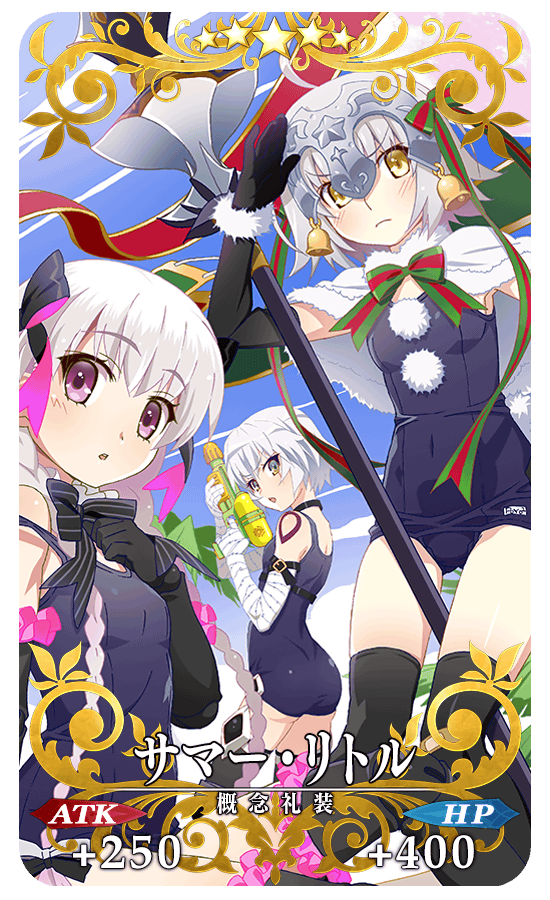 |
★★★★★SSR |
| 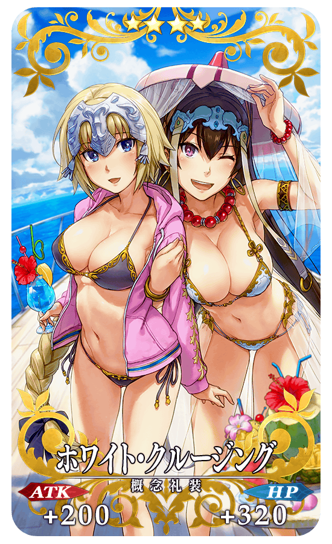 |
★★★★SR |
| 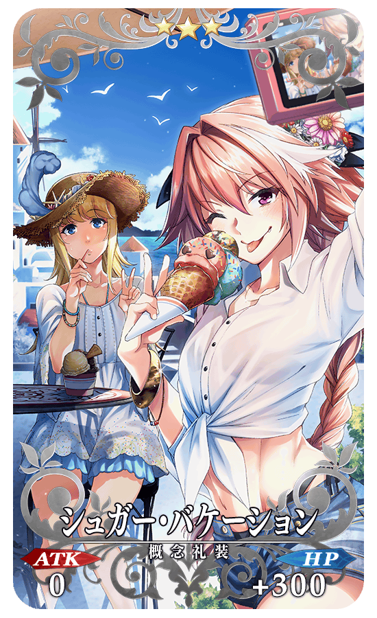 |
★★★R |
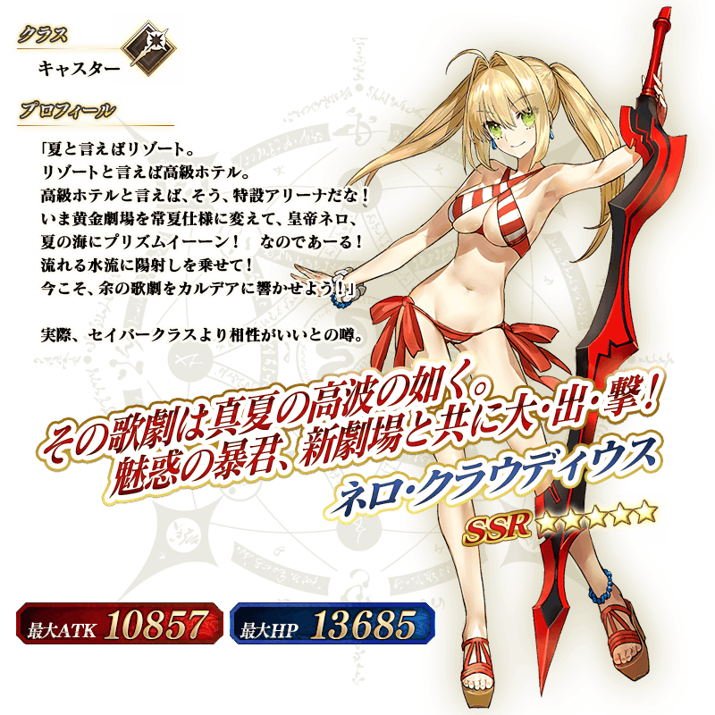
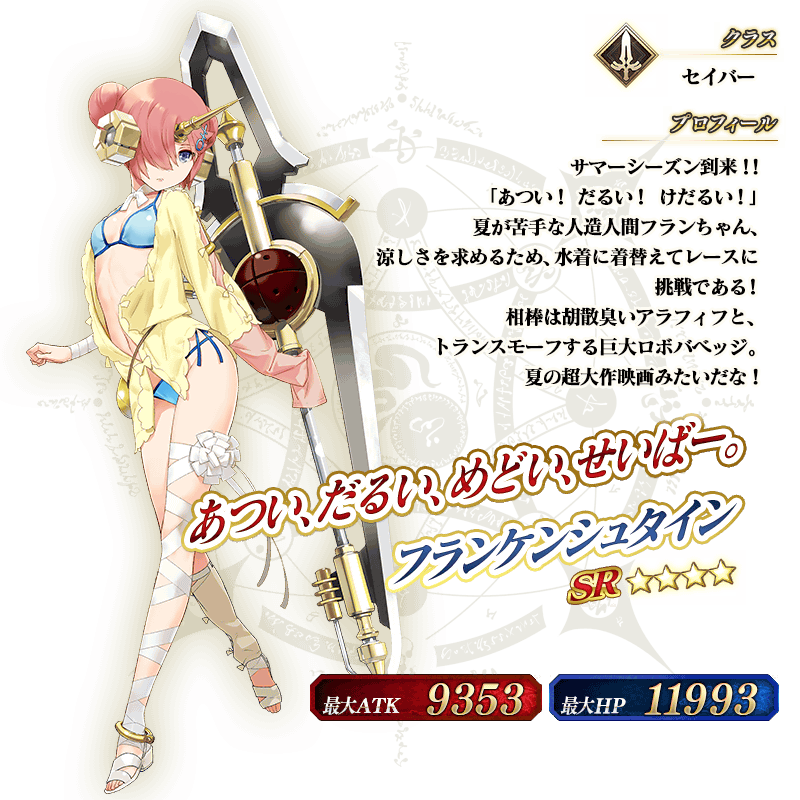
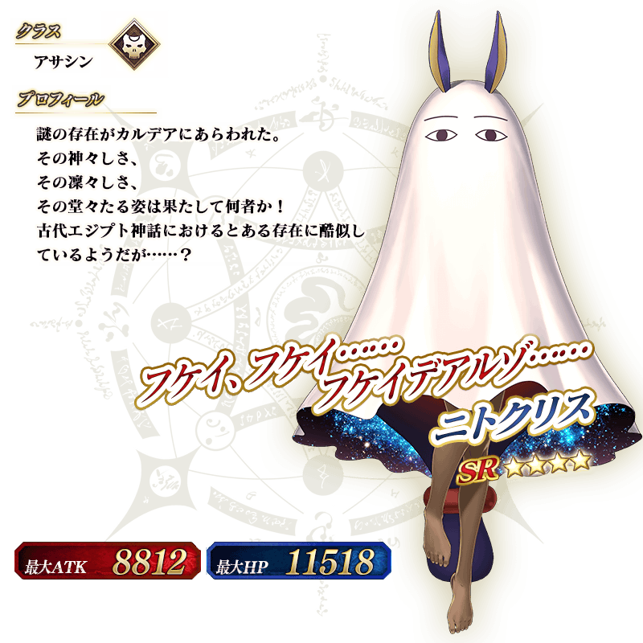
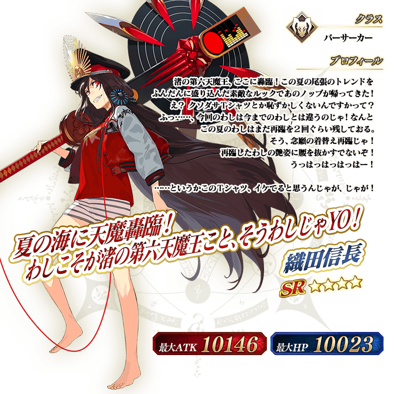